This study investigates the influence of clinical predictors on experience severity of flu status among vaccinated individuals 6 months post-vaccination. We aim to identify the most superior predictive model for severity of flu by evaluating and comparing multiple statistical models. The selected model will help determine which factors significantly predict the chances of experiencing severe flu based on individual characteristics.
library(patchwork)
library(factoextra)
library(dplyr)
library(tidyverse)
library(vtable)
library(recipes)
library(caret)
library(ggcorrplot)
library(rsample)
library(MASS)
library(ISLR)
library(glmnet)
library(corrplot)
library(ggplot2)
library(plotmo)
library(ggrepel)
library(car)
library(pROC)
#data import
dat = read.csv("vaccine/severe_flu.csv")
dat = dat[,2:13] #removing id
# no missing data sum(is.na(dat))
#data cleaning
dat = dat |>
mutate(
gender = factor(gender, levels = c(0, 1), labels = c("Female", "Male")),
race = factor(race, levels = c(1, 2, 3, 4), labels = c("White", "Asian", "Black", "Hispanic")),
smoking = factor(smoking, levels = c(0, 1, 2), labels = c("Never", "Former", "Current")),
diabetes = factor(diabetes, levels = c(0, 1), labels = c("No", "Yes")),
hypertension = factor(hypertension, levels = c(0, 1), labels = c("No", "Yes")),
severe_flu = factor(severe_flu, levels = c(0,1), labels = c("No", "Yes")),
age = as.numeric(age),
SBP = as.numeric(SBP),
LDL = as.numeric(LDL),
bmi = as.numeric(bmi),
weight = as.numeric(weight),
height = as.numeric(height))
#test and training data split
set.seed(2)
data_split = initial_split(dat, prop = 0.7)
training_data = training(data_split)
testing_data = testing(data_split)This dataset contains data on 1000 participants (N =1000). There were no missing data for any of the predictors. Table 1 shows the mean, standard deviation for each continuous variable and the proportion across each categorical variable. In the full dataset, there were 75% of individuals who did not experience severe flu 6-months after vaccination while 25% did. The distribution of age, SBP, and LDL appear to be similar across flu severity outcome, while there are some differences in distribution of weight, height, and bmi across flu severity status (Figure 1). There also appears to be differences in the distribution of continuous variables in the training data compared to testing data (Figure 2). There is evidence of multicollinearity between weight and bmi with a correlation of 0.71-0.69 across flu severity status (Figure 3). The proportion of individual who experience severe flu across races, smoking status, diabetes, and hypertension do not differ drastically (Figure 4). From the PCA – Biplot on centered and scaled data, linear combinations of continuous variables do not separate the classes well (Figure 5).
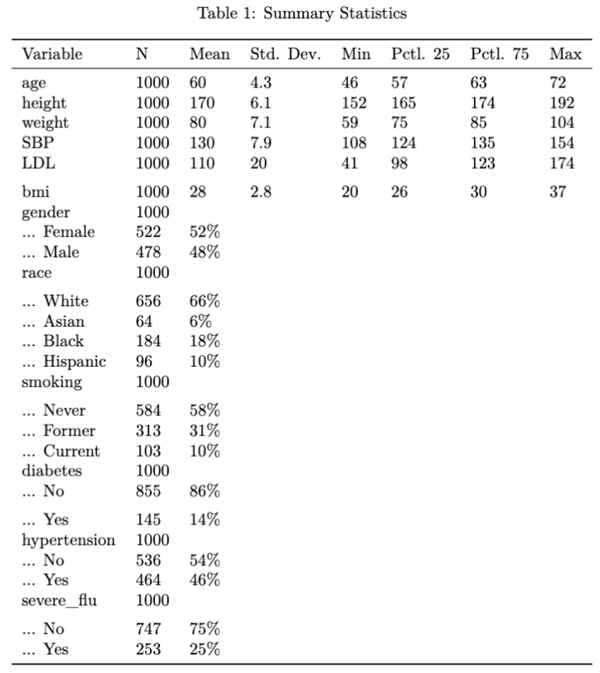
10-fold cross-validation (CV) was performed across all models in the trainControl function from caret package. For each configuration of tuning parameters, CV randomly split the training data into 10 equal-sized folds: 9 folds serve as the training set, and the remaining fold works as the validation set. The summary function was set to two class summary and class probabilities were computed for the binary outcome of flu severity. The metric ROC was calculated for each of the validation set folds, and the average ROC was derived from them. To optimize model performance, this process was repeated for different parameter configurations. The model with the highest ROC was chosen as the best or final model to be evaluated on the test dataset.
ctrl = trainControl(method = "cv",
number = 10,
summaryFunction = twoClassSummary,
classProbs = TRUE)Data Preprocessing was performed on the training data to center, scale, and apply the optimal box cox transformation on numeric predictors through the recipes function. This recipe was prepared on training data through the prep function, and the bake function was applied to the new training and testing data using the prep from the training data.
rec= recipe(severe_flu ~ ., data = training_data) |>
step_BoxCox(all_numeric_predictors())|>
step_center(all_numeric_predictors()) |>
step_scale(all_numeric_predictors())
# 2. Prepare the recipe on the training data
prep = prep(rec, training = training_data)
trainData_pp = bake(prep,new_data = training_data)
testData_pp = bake(prep, new_data = testing_data)
#PCA
rec_pca= recipe(severe_flu ~ ., data = training_data) |>
step_BoxCox(all_numeric_predictors())|>
step_center(all_numeric_predictors()) |>
step_scale(all_numeric_predictors())|>
step_pca(num_comp = 5)
prep_pca = prep(rec, training = training_data)
trainData_pca = bake(prep_pca,new_data = training_data)
testData_pca = bake(prep_pca, new_data = testing_data)Random seed 2 was set through the
set.seed function to ensure reproducible results. All models were
trained using the caret package which were then compared on training
data performance through resampling. The models all predicted the
outcome ‘severe flu’ status.
Partial least squares investigated the optimal dimension reduction. Elastic net for regularization and logistic regression as the simpler model were fit on the training dataset as these methods balance complexity and simpler models. Since the classes of flu severity were not separable, SVM Radial Sigma was applied for higher-dimension non-linear boundary. Ada Boosting was applied to repeatedly fit classification trees to weighted versions of the training data and update the weights to better classify previously misclassified observations.
Partial Least Squares (PLS): The model was trained on the tuning grid of components 1:14 as the maximum number of components in the dataset in a supervised way. Through CV, the optimal number of components in the final model was 4 which explain the maximum variance present for the predictor variables (Figure 6).
set.seed(2)
pls_fit = train(severe_flu~.,
data = trainData_pp,
method = "pls",
metric = "ROC",
tuneGrid = data.frame(ncomp = 1:14),
trControl = ctrl)
ggplot(pls_fit, highlight = TRUE)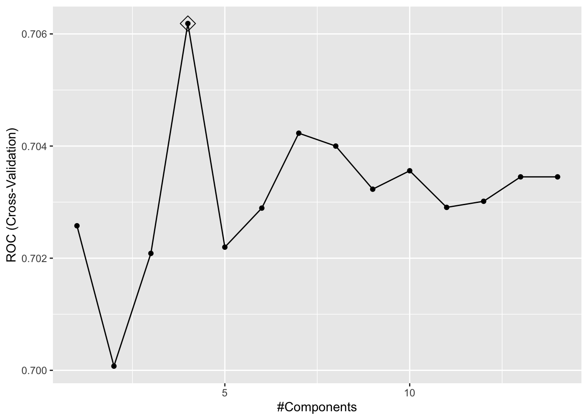
Elastic Net: The selected tuning grid of alpha and lambda values were expanded through the expand.grid function where a range of alpha values from 0 to 1 and a sequence of 100 lambda values from exponential -5:3. The method in train control was set to “glmnet”. After CV on the preprocessed training data, the final model had an optimal alpha value of 0 and lambda value of 0.35 (Figure 7). All variables were kept in the model. Variables such as age, gender: Male, race: Black, smoking status: Former, and height each had negative coefficients.
set.seed(2)
enet.fit = train(severe_flu~.,
data = training_data,
method = "glmnet",
preProcess = c("center", "scale"),
metric = "ROC",
tuneGrid = expand.grid(alpha = seq(0, 1, length = 21),
lambda = exp(seq(-5, 5, length = 100))),
trControl = ctrl)
#enet.fit$bestTune
#coef(enet.fit$finalModel, enet.fit$bestTune$lambda)
myCol = rainbow(25)
myPar = list(superpose.symbol = list(col = myCol),
superpose.line = list(col = myCol))
#plot(enet.fit, par.settings = myPar, xTrans = log)
# same logisitc regression on preproccessed data
enet.fit2 = train(severe_flu~.,
data = trainData_pp,
method = "glmnet",
metric = "ROC",
tuneGrid = expand.grid(alpha = seq(0, 1, length = 21),
lambda = exp(seq(-5, 3, length = 100))),
trControl = ctrl)
#enet.fit2$bestTune
#coef(enet.fit2$finalModel, enet.fit2$bestTune$lambda)plot(enet.fit2, par.settings = myPar, xTrans = log)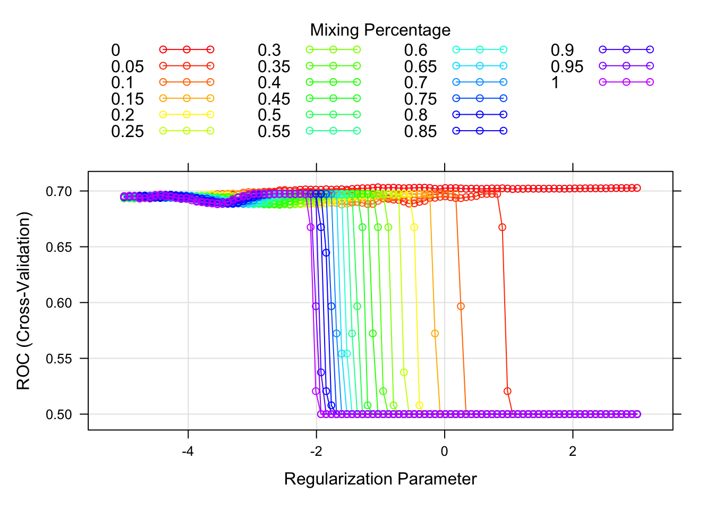
Logistic Regression: There is no tuning parameter for this model, so the 10-fold CV was used for finding the optimal model. The binomial family distribution was specified in the train function to perform logistic regression. After CV on the preprocessed training data, the final model included all predictors with negative coefficients on the same variable as the elastic net model.
set.seed(2)
#Logistic regression on ordinary data
log.fit = train(severe_flu~ .,
data= training_data,
method = "glm",
family = "binomial",
preProcess= c("center", "scale"),
metric = "ROC",
trControl = ctrl)
#Logistic Regression Model on Preprocessed data
log.fit2 = train(severe_flu~.,
data= trainData_pp,
method = "glm",
family = "binomial",
metric = "ROC",
trControl = ctrl)
#summary(log.fit2$finalModel)
#vif(log.fit2$finalModel)
#Logistic Regression on preprocessed data with PCA
log.fit3 = train(rec_pca,
data= training_data,
method = "glm",
family = "binomial",
metric = "ROC",
trControl = ctrl)Linear Discriminant Analysis: LDA was fit using the train() function with method “lda”. Since LDA does not have any hyperparameters to tune, no tuning grid was specified and performs supervised linear dimension reduction by finding a linear combination of features that best separates the outcome classes. After CV, the two outcome groups (severe vs. non-severe flu) were not well-separated along the first linear discriminant (Figure 8).
x= model.matrix( severe_flu ~ . ,training_data )[,-1]
y = training_data$severe_flu
set.seed(2)
#Model without transformations
model.lda= train(x,y,
preProcess= c("center", "scale"),
method = "lda",
metric = "ROC",
trControl = ctrl)
#Model on Preprocessed data
x_rec= model.matrix( severe_flu ~ . ,trainData_pp )[,-1]
y_rec = trainData_pp$severe_flu
set.seed(2)
model.lda2= train(x_rec,y_rec,
method = "lda",
metric = "ROC",
trControl = ctrl)plot(model.lda2$finalModel)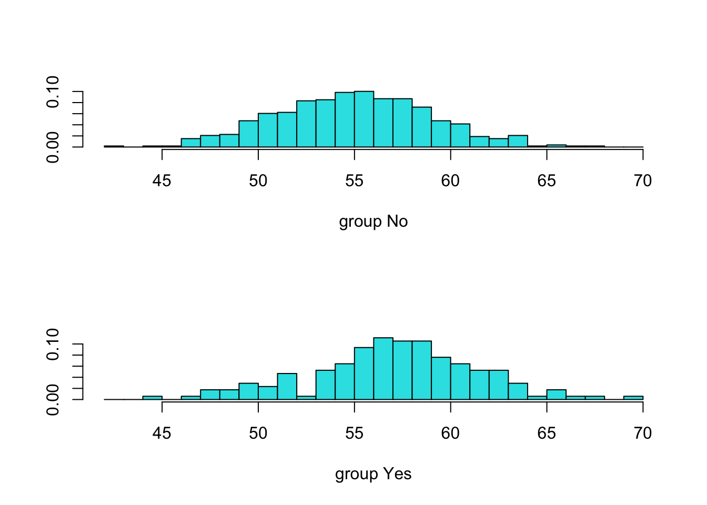
Ada Boosting: A tuning grid was created using expand.grid, varying the number of trees (n.trees = 0.1, 1, 10, 50, 100), interaction depth (1–5), and shrinkage (0.001, 0.005, 0.01, 0.05). The minimum number of observations in each terminal node was set to the default value of 10. The default number of individuals in each final node was used (10). The method was set to “gbm” for boosting and specification of “adaboost” distribution. After CV, the optimal model used 50 trees, 1 interaction depth, and a shrinkage of 0.01 (Figure 9). Variable importance plots indicated that BMI had the strongest influence on predicting flu severity, followed by weight (coefficient magnitude: 0.97), while other variables contributed very little to the model (Figure 10).
gbmA.grid = expand.grid(n.trees = c(0.1,1,10,100,200),
interaction.depth = 1:5,
shrinkage = c(0.001,0.005, 0.01, 0.05),
n.minobsinnode = 10)
set.seed(2)
#Ada Boosting on non-scaled data wihout highly correlated variables
gbmA.fit = train(severe_flu ~ . -weight - height,
data= training_data,
tuneGrid = gbmA.grid,
trControl = ctrl,
method = "gbm",
distribution = "adaboost",
metric = "ROC",
verbose = FALSE)
#Ada Boosting on Pre processed data
gbmA.fit2 = train(severe_flu ~ .,
data= trainData_pp,
tuneGrid = gbmA.grid,
trControl = ctrl,
method = "gbm",
distribution = "adaboost",
metric = "ROC",
verbose = FALSE)
ggplot(gbmA.fit2, highlight = TRUE)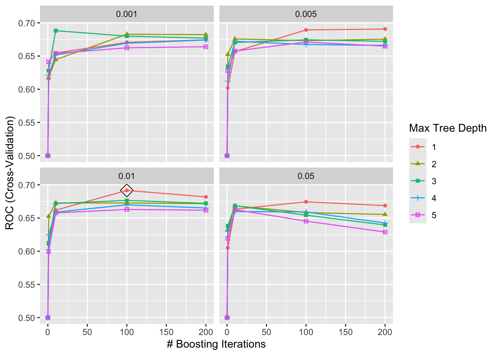
#summary(gbmA.fit2$finalModel, las = 2, cBars = 19, cex.names = 0.8)Support Vector Machine (SVM) Radial Sigma: This model used the specified method of “svmRadialSigma”. The hyperparameter grid was defined with an exponential range of cost (C) values from exp(3) to exp(7), totaling 25 values, and sigma values from exp(−12) to exp(−4), totaling 15 values. This expanded grid was selected based on prior experimentation with the grid, as smaller ranges (e.g., C between exp(0) and exp(5)) were at the boundaries of the previous grids. After CV, the optimal model used a cost value of 175.32 and sigma value of 6.041424e-05 (Figure 11).
plot(svmr.fit2, highlight = TRUE, par.settings = myPar)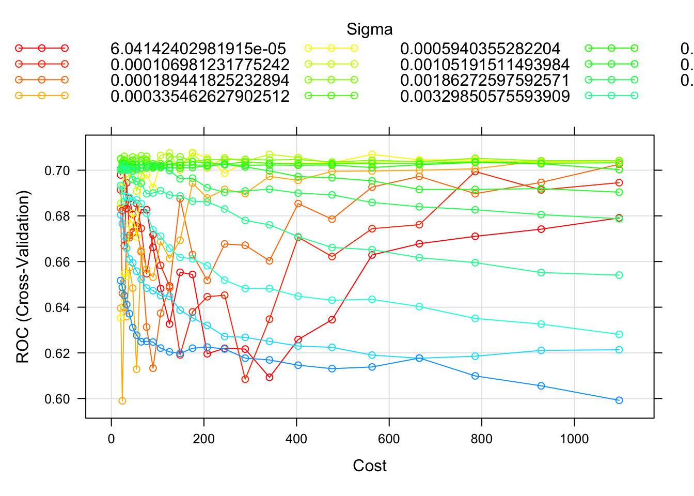
To compare the models, the resamples function was applied since the same CV and data preprocessing was applied to each model. The model with the highest median ROC on the training data was logistic regression (0.738). All models had similarly high sensitivity, the ability to correctly identify severe flu cases, and low specificity, indicating limited ability to correctly classify non-severe cases. The logistic regression had a specificity of 0.21 and sensitivity of 0.95. Although the elastic net model, which behaved more like a ridge regression (α = 0), achieved the highest mean ROC (0.710), it did not have the highest median ROC, suggesting less consistent performance across folds.
Figure 12. Resampling Cross-Validation Model Comparison
#*scaled, centered & box cox transformation*
resamp = resamples(list(svmr2= svmr.fit2,
boosting2= gbmA.fit2,
pls = pls_fit,
enet2= enet.fit2,
lda2 = model.lda2,
logistic2= log.fit2,
logistic3= log.fit3)) # Pca logistic
#summary(resamp)
bwplot(resamp)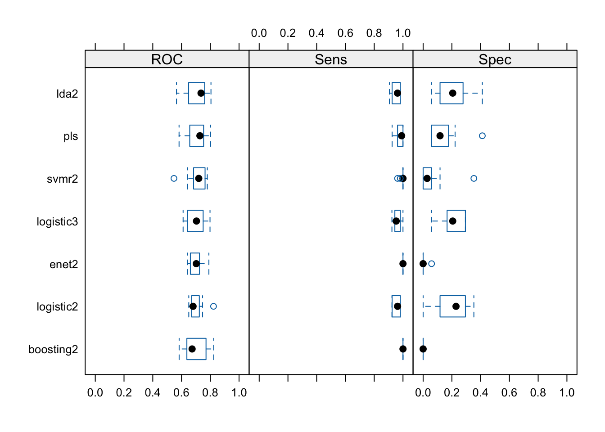
Across many models, variables such as bmi, weight, and height were highly correlated. PCA was applied to the final model as an attempt to reduce the differences in variances, but did not improve the model on the training data (log.fit3). The final model did not use PCA as it did not improve generalizability, so to preserve interpretability, simple logistic regression was used. Therefore, the final model of logistic regression trained on the preprocessed data was selected based on the lowest median ROC selection criteria. Thus, advanced methods such as boosting and SVM did not outperform simpler logistic regression, suggesting limited benefit from more complex models in this dataset.
The odds ratio of flu severity is e^0.51= 1.66 among males (p= 0.0077) compared to females, holding all other variables fixed. This result is statistically significant. The odds ratio of flu severity is 1.2 among Asian individuals, lower among Black individuals, and 1.5 times higher among Hispanic individuals compared to white individuals. The OR of flu severity among former smokers is 0.25 lower compared to those who never smoked and 1.93 times higher among current smokers (p= 0.029). Each additional year of age was associated with a 3% decrease in the odds of severe flu (OR = exp(-0.126) = 0.88), but this was not statistically significant (p = 0.2402). Each unit increase in BMI is associated with 2.18 higher OR of experiencing a severe flu, holding all variable fixed (p <0.001). Those who have diabetes had 1.66 times the odds of experiencing severe flu compared to those who do not have diabetes (p= 0.053). The OR of flu severity among those with hypertension was 1.46 higher than those who do not have hypertension (p = 0.23). Each unit increase in Systolic blood pressure was associated with 1.07 times the odds of flu severity (p= 0.68). Each unit increase in LDL cholesterol levels was associated with 1.16 times the odds of flu severity while holding all other variables fixed (p= 0.11). The only coefficients which were found to be significant with the outcome of flu severity was gender (Male), smoking status (Current), and BMI. These results suggest that BMI, gender, and smoking status are the most relevant predictors in this dataset, while many clinical variables such as SBP and LDL had low predictive information. By inputting individual participant values for variables such as age, gender, race, smoking status, and other health conditions, the logistic regression equation produces a probability that quantifies the risk of experiencing severe flu.
The final model had lower test performance (ROC= 0.68) compared to the training performance (ROC = 0.738). The model may have had poor generalizability due to differences in distributions of continuous predictors in training and testing data. Variable importance plots of models and optimal number of components also suggested that many of these predictors were not significant in explaining the variance of outcome.
The final model had a kappa value of 0.2 and accuracy of 0.75 which suggests the model has poor observed and expected agreement. Values of kappa close to 0 suggest the models are uncorrelated and classification is not meaningful in the data.
Boosting and SVM models did not perform better on the training data. This was likely due to the classes not being nearly separable and overlapping substantially, so SVM performed poor compared to logistic regression. Boosting did not perform well even when highly correlated variables were excluded from the train function. Overall, the predictor variables in this data may not have been truly informative of the outcome of flu severity 6-months post-vaccination evident of low importance among majority of predictors.
Figure 12. Resampling Cross-Validation Model Comparison
# Predict probabilities for the "Yes" class (severe flu)
test.pred.prob = predict(log.fit2, newdata = testData_pp, type = "prob")[, "Yes"]
test.pred = ifelse(test.pred.prob > 0.5, "Yes", "No")
confusion_table= confusionMatrix(data = factor(test.pred, levels = c("No", "Yes")),
reference = testData_pp$severe_flu,
positive = "Yes")
roc.glm = roc(testData_pp$severe_flu, test.pred.prob)## Setting levels: control = No, case = Yes## Setting direction: controls < cases# ROC curve
plot(roc.glm, legacy.axes = TRUE, print.auc = TRUE)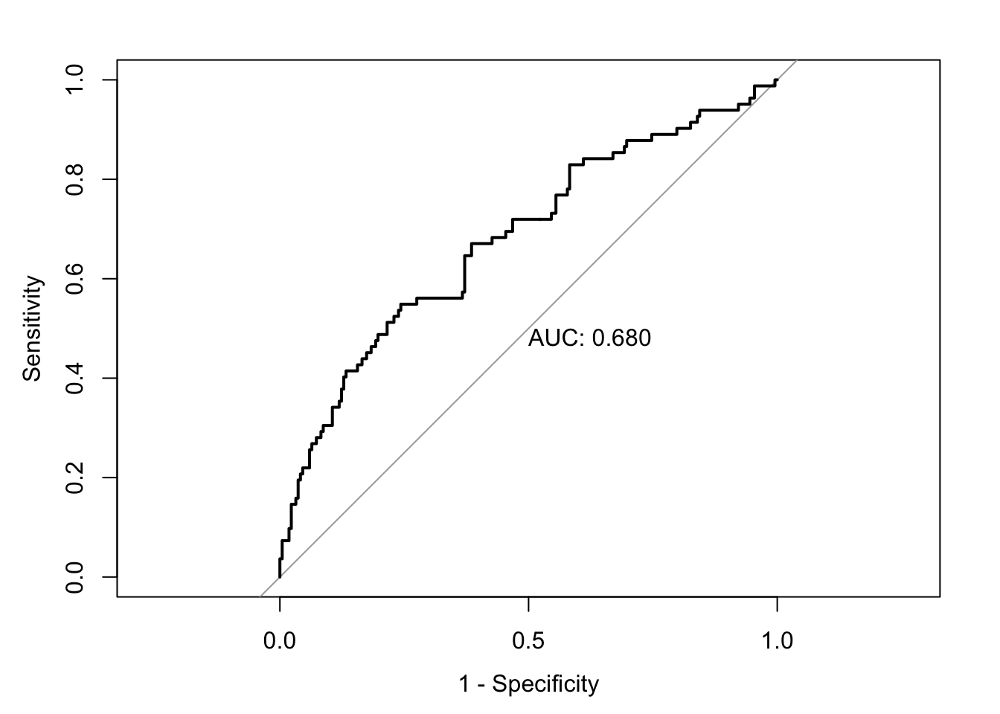
par(mfrow = c(2, 4))
cont_pred = c("age", "height", "weight", "bmi", "SBP", "LDL")
plot_list = list()
# Loop over each variable
for (var in cont_pred) {
p = ggplot(training_data, aes_string(x = "severe_flu", y = var)) +
geom_violin(trim = FALSE) +
geom_boxplot(width = 0.1, outlier.shape = NA)
plot_list[[var]] = p
}
wrap_plots(plot_list, ncol = 3)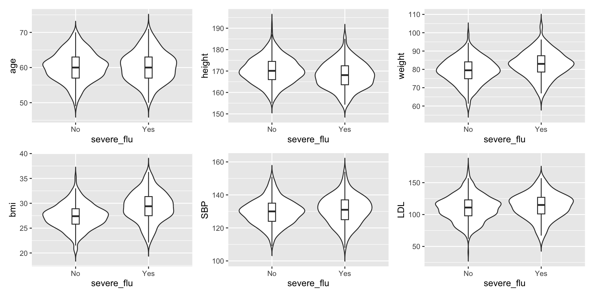
par(mfrow = c(2, 4))
for (var in cont_pred) {
p = ggplot(testing_data, aes_string(x = "severe_flu", y = var)) +
geom_violin(trim = FALSE) +
geom_boxplot(width = 0.1, outlier.shape = NA)
plot_list[[var]] = p
}
wrap_plots(plot_list, ncol = 3)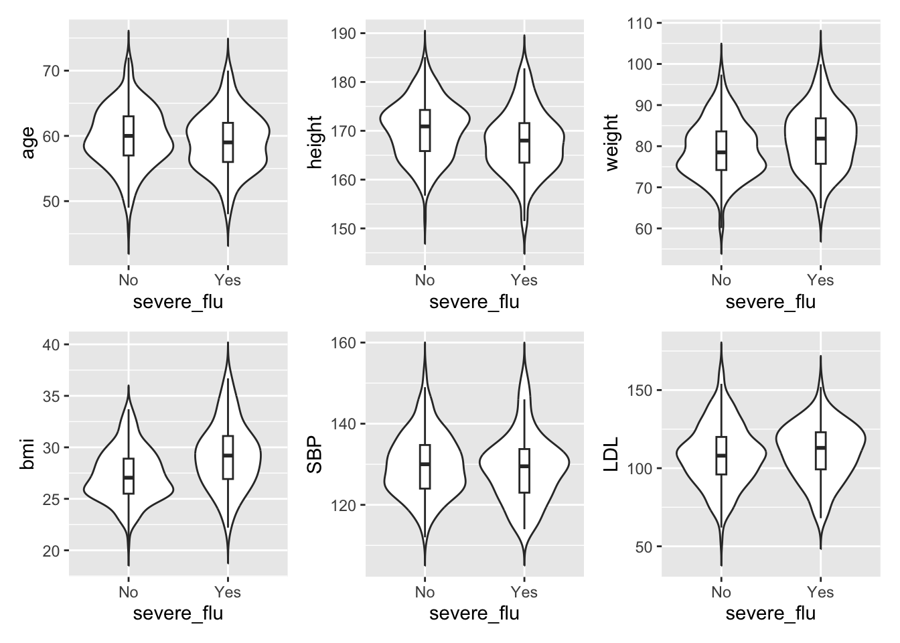
#for no severe_flu group
dat_0= dat|>
filter(severe_flu == "Yes")
cor_data_0= dat_0[cont_pred]
cor_matrix_0= cor(cor_data_0)
# for severe_flu group
dat_1= dat|>
filter(severe_flu == "No")
cor_data_1 = dat_1[cont_pred]
cor_matrix_1= cor(cor_data_1)
corr_0= ggcorrplot(cor_matrix_0,
hc.order = TRUE,
type = "lower",
lab = TRUE,
colors = c("red", "white", "blue"),
ggtheme = theme_minimal())
corr_1= ggcorrplot(cor_matrix_1,
hc.order = TRUE,
type = "lower",
lab = TRUE,
colors = c("red", "white", "blue"),
ggtheme = theme_minimal())
corr_0+corr_1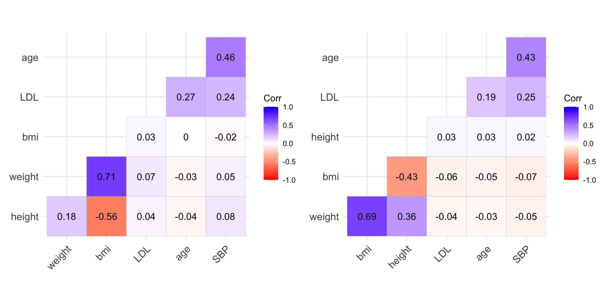
cat_pred = c("race", "smoking", "diabetes", "hypertension")
plot_list = list()
for (var in cat_pred) {
p = ggplot(dat, aes(x = .data[[var]], fill = factor(severe_flu))) +
geom_bar(position = "fill") +
labs(x = var, y = "Proportion", fill = "Severe Flu") +
theme_minimal()
plot_list[[var]] = p
}
wrap_plots(plot_list, ncol = 2)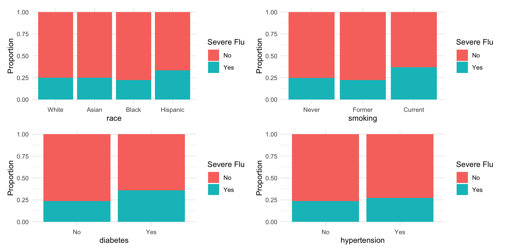
#biplot
train_numeric= trainData_pp |>
dplyr::select(where(is.numeric))
pca.fit = prcomp(train_numeric)
fviz_pca_biplot(pca.fit,
axes = c(1,2),
habillage = trainData_pp$severe_flu,
addEllipses = TRUE ,
label = "none")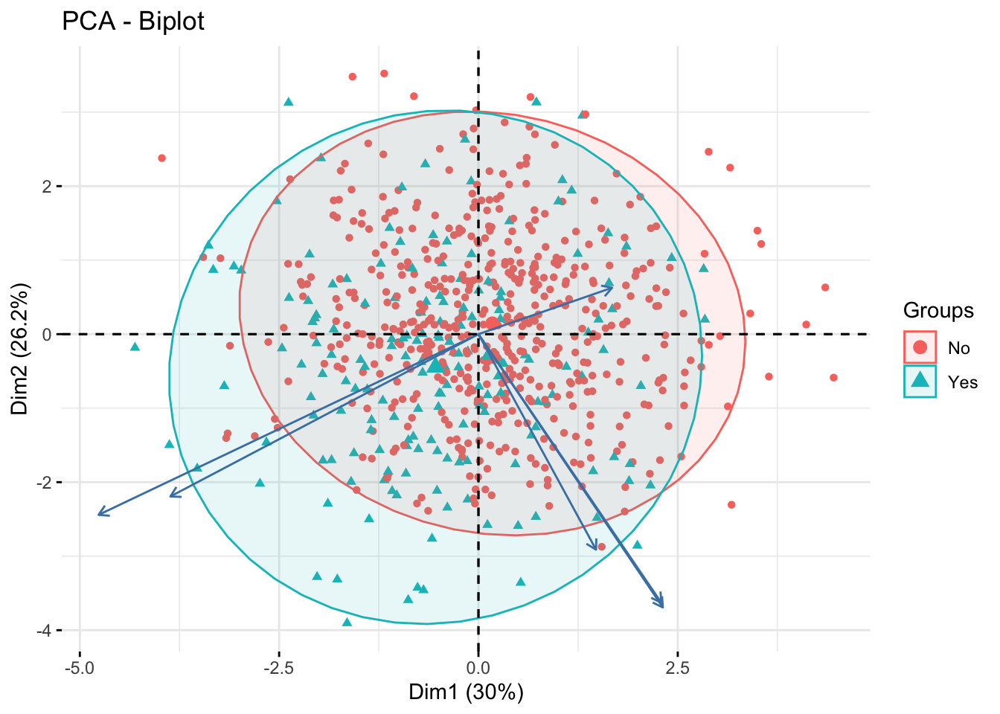